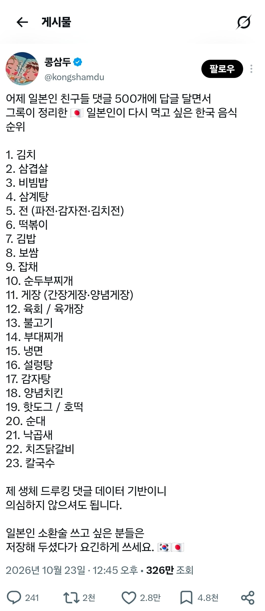
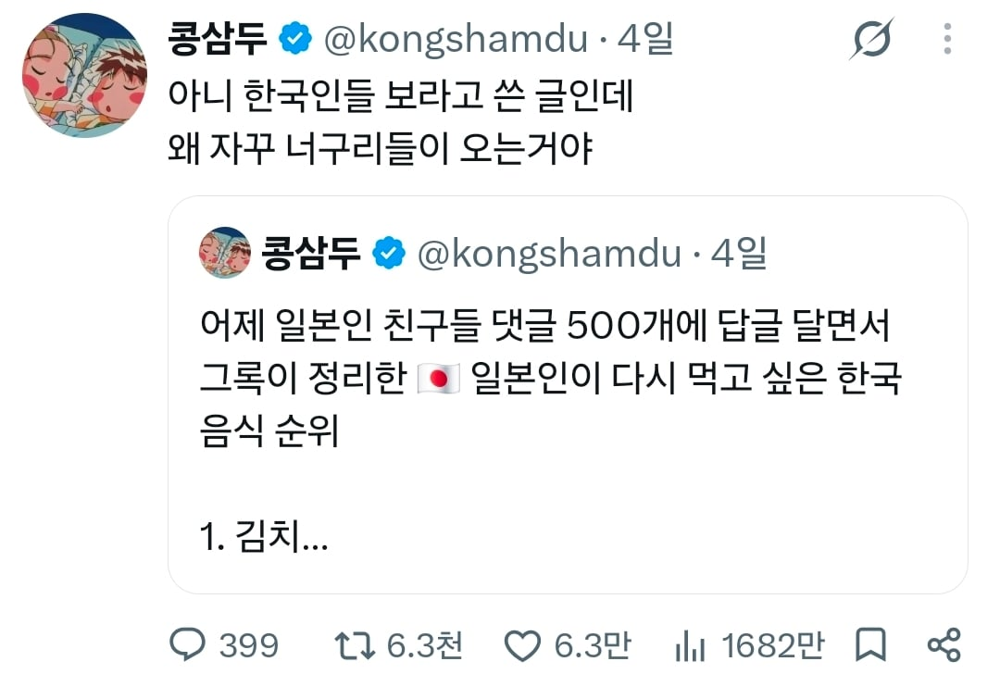
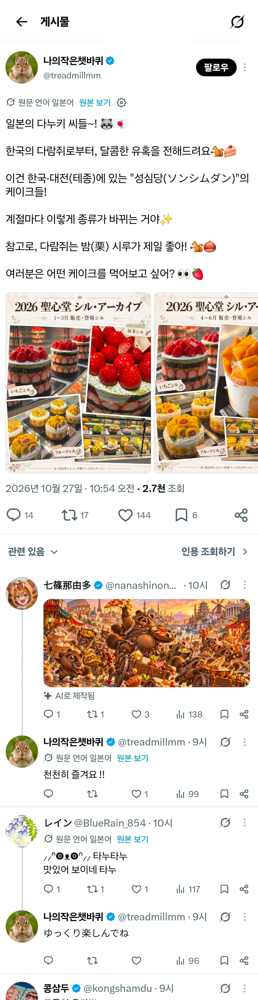
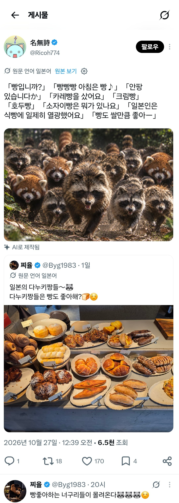
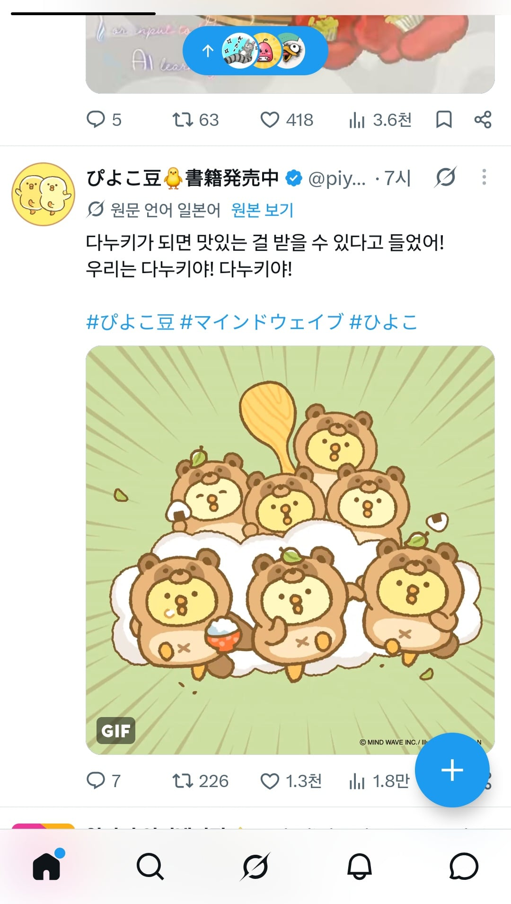
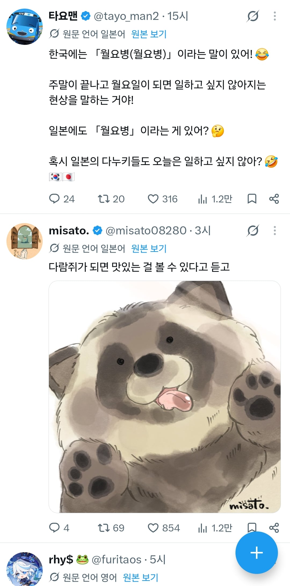
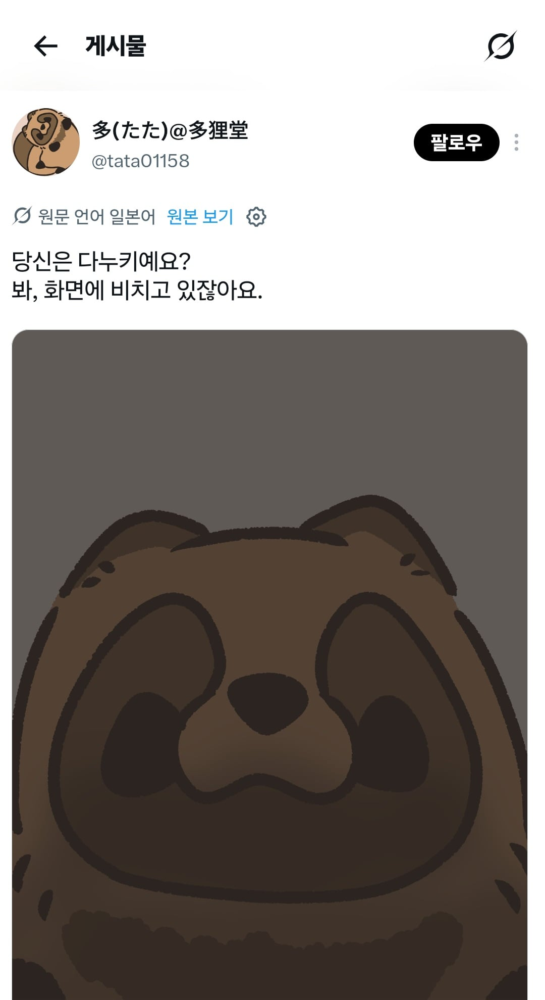
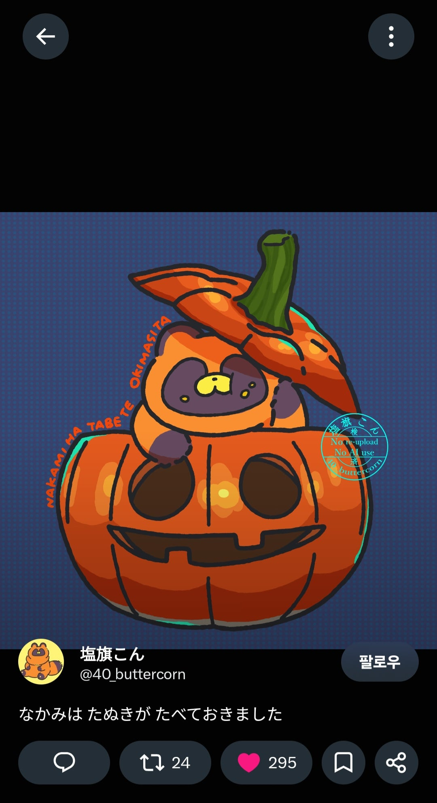
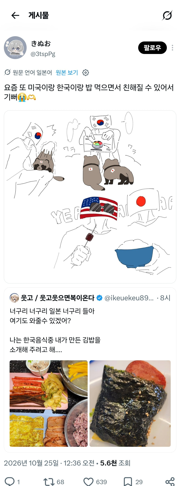
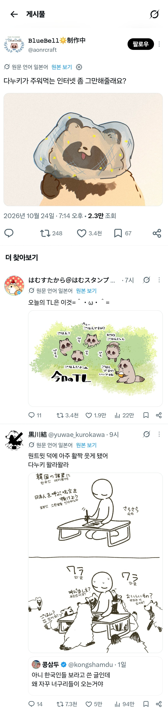

저 한국인이 트위터에서 저런 리스트를 만들었는데
인용과 댓글에 너구리들이 출몰함
너구리가 일본에서는 먹는거 좋아하는 이미지인가봄
한식과 한국에 호의적인 애들이
너구리 짤로 한국 음식 정보좀!! 하는 말을
우리는 다누키에요 밥주세요
라고 밈처럼 밀고 다니니 사람들이 귀엽게 받아들임








머리 좋은 그림쟁이들은
귀여운 너구리그림을 그리며 홍보하고
상황 자체가 재밌는 인싸들이 서로서로
야 이거봐라 하고 화기애애하게 이야기 나눴는데
개드립 올라간 그런 넌씨눈들의 갑분싸 상황이 생긴것 ㅋㅋㅋㅋ
누구도 혐오성발언하지않고
한식뿐 아니라 일식, 양식 정보도 오가고있었음
https://www.dogdrip.net/731799284
개드립에 올라간게 이거
양국 넌씨눈들이 너네 사이좋지마!!! 라고 하는듯
누가봐도 혐오발언의 ㅎ도 없는데 혐오했다고 개소리 퍼뜨려서
적당히 하라고 라는의미로 올라온 거
일본애들도 이 아싸들! 하고 화내주며
아직도 너구리얘기하며 화기애애하다 ㅋㅋㅋ
바벨탑에서 이정도 대화는 있어야지 평화롭지
근데 저거 보니깐
"한국인들이 일본인들보고 다누키라고 부른대"
라고 일본인들이 이야기해서 쭉 퍼진거던데
그와중에 자기 조만간 한국가는데 '일본에서 온 다누키입니다' 라고 한국어로 소개하면 어떠냐는 둥 저 파딱 한국인 한명때문에 '한국인'에 대한 이상한 오해가 생겨서 뿔난거임
그냥 밑도 끝도 없이 사람들이 화난게 아님
도대체 어떤 한국인이 일본인 보고 너구리라고 하냐
걍 일본인이라 하던가 굳이 동물로 비유하면 섬숭이라고 하지